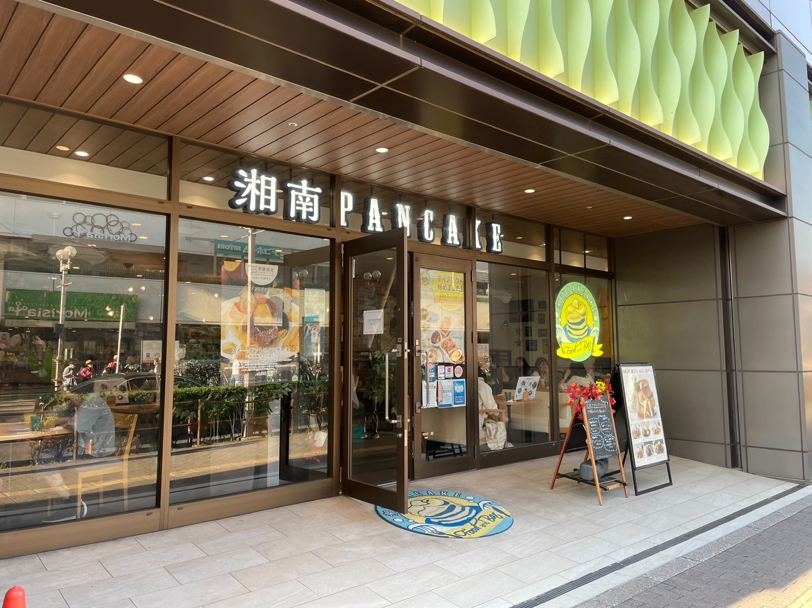
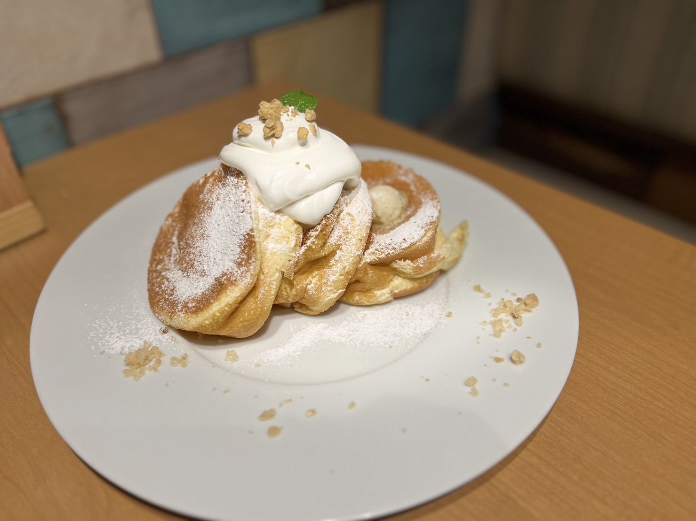
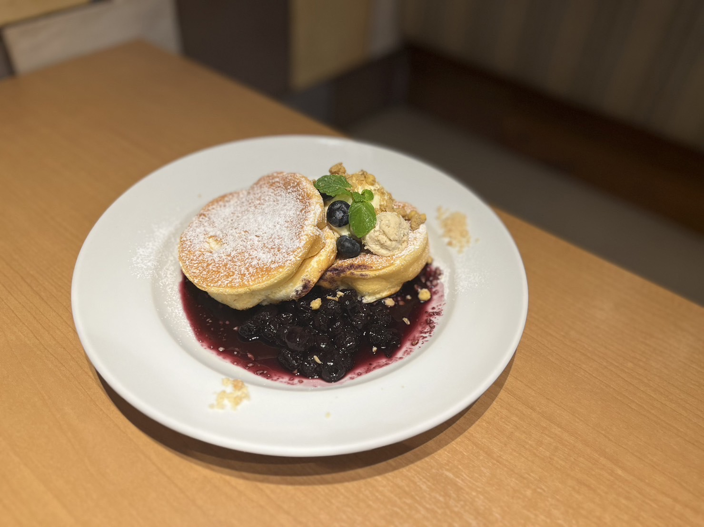
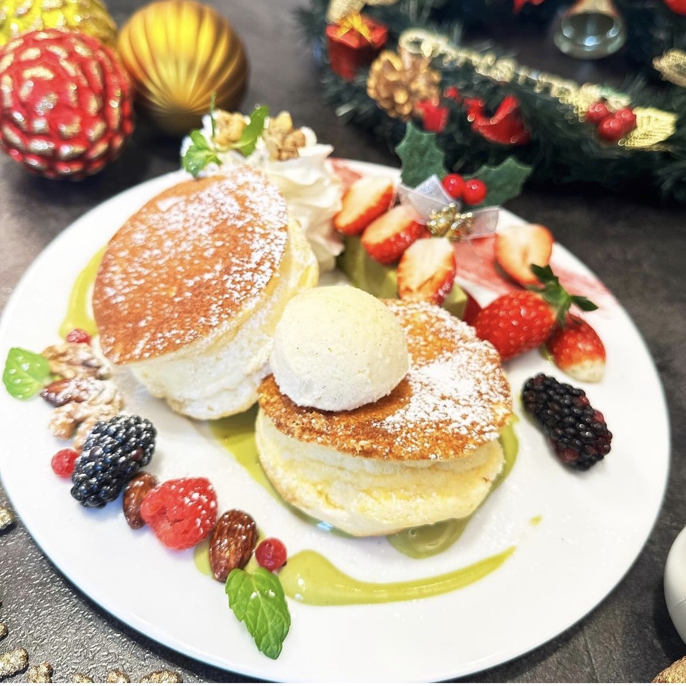
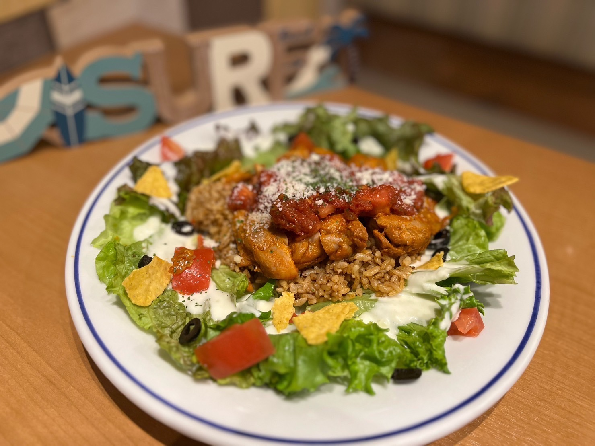
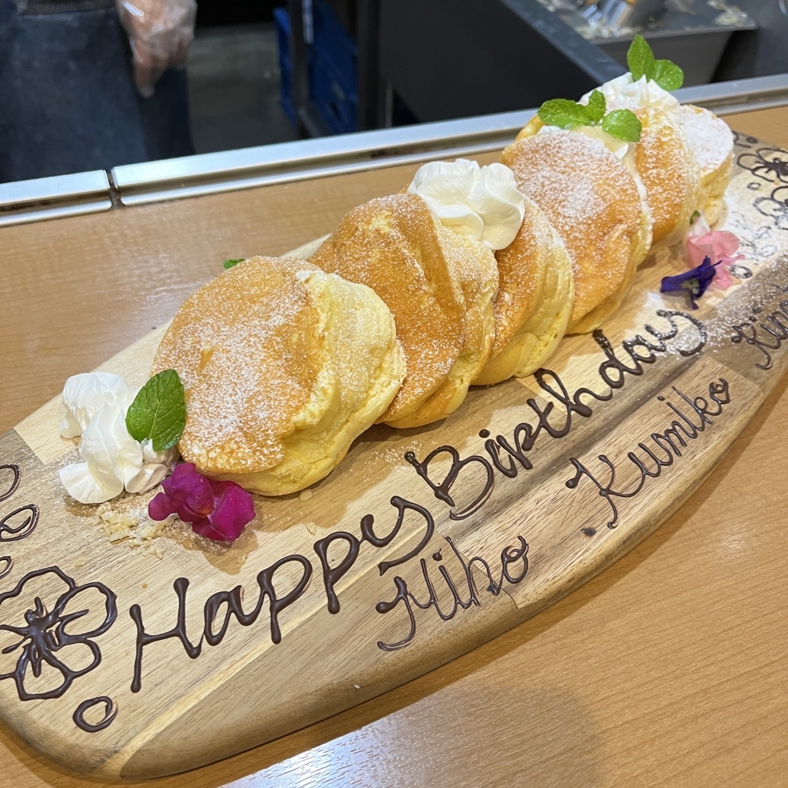
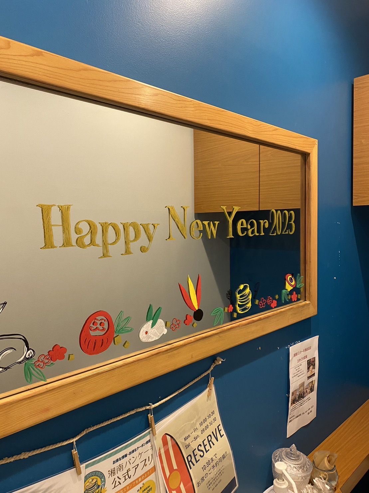

神奈川県藤沢市に本店を構える、パンケーキ専門店!
湘南地域をイメージした、オーガニックで健康的な食材を使用したパンケーキが特徴的。
外側はカリッと焼き上げられ、中はふわっとした食感が楽しめる！

当店の名物湘南パンケーキ！！

さっぱりとしたブルーベリーソースとクリームチーズの相性を感じられるパンケーキ

期間限定のシーズナルパンケーキ 苺とピスタチオのクリスマスパンケーキ！ ピスタチオソースと酸味の効いたルバーブ入りのピスタチオブリュレを添えた特別なパンケーキ！

グリルチキンとピり辛サルサがジャンバラヤとの相性も良く、クセになるオーバーライスプレート！

プレートでのご予約もでき、友達や家族など大切な記念日にお祝いもできる！

季節に合わせて店内もおしゃれに！

パンケーキだけでなく料理も美味しいものばかり！
特にメキシカンチキンジャンバラヤは大人気！
大学からも近く、ランチメニューではご飯とパンケーキがセットでついてくるお得なランチメニューも！
友達とのお祝いごとにも使えるので、ぜひ行ってみてください！
全日10:00～22:00 (料理L.O. 21:00)
住所: 千葉県習志野市谷津7-7-1 Loharu津田沼 １階
電話番号: 047-406-3222